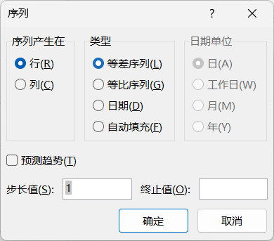
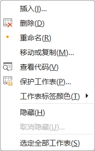
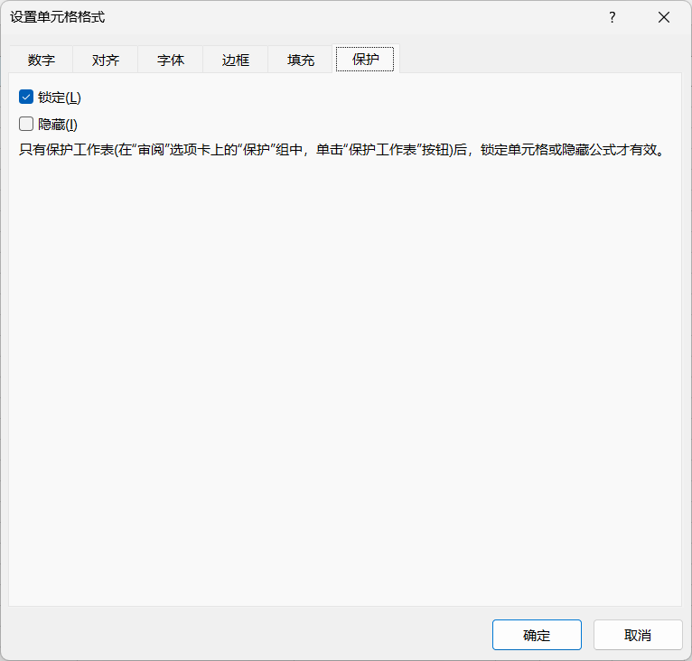
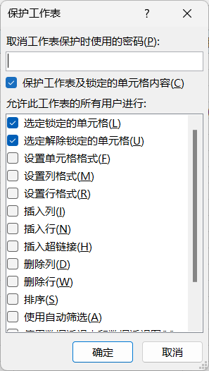
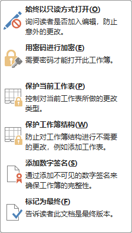

电子表格处理
Excel
- 内容 Contents
- 单元格
- 工作表
- 样式
- 图表
单元格 Cell
- 地址 Address
- 每个单元格都有自己的地址：列和行
- 列：大小字母
- 行：阿拉伯数值
- 使用地址时，根据地址是否变化，分为：
相对地址|相对引用：地址随引用会不断发送变化；A1
绝对地址|绝对引用：地址固定不变；$A$1
混合地址|混合引用：列固定或行固定；$A1；A$1
跨表引用：前面是表名，后面是单元格地址；=原始数据!G35
- 使用 F4 转换地址类别：重复按 F4，可以在行、列、行列之间切换
- 可以选择多个地址同时转换
- 使用公式时，要特别注意
- 定位 Location
-
单击定位↑ ↓ ← →：一次移动一个单元格CTRL + ↑ ↓ ← →：移动到列首、列尾、行首、行尾TAB：向后移动SHIFT + TAB：向前移动
- 选择 Selection
- 单选
鼠标单击
- 多选
连续选择：鼠标拖动选择、SHIFT + 单击
断续选择：CTRL + 单击
- 全选数据区
数据区任一单元格，按 Ctrl + A
第一个单元格，CTRL + Shift + → + ↓：先选择到行尾，再选择到列尾
- 其它操作
- 调整行高
- 调整列宽
- 插入多个空白行：先选择若干行，再执行"插入"
- 数据录入
- 自定义序列
- 文件 → 选项 → 高级 → 编辑自定义列表（最下面）
- 可手动输入；也可从单元格导入数据项
- 调整列宽|行高
-
单独调整：双击 两列|两行连接线，根据当前列|行的内容自动调整同时调整：全选单元格区域，拖动 某列|行连接线，调整所有列|行宽度、高度一致
- 单元格样式
1. 手动录入
. 单个单元格录入
. 区域录入：选择单元格区域（连续或断续），输入数据，按Ctrl + Enter，选择区域被数据填充
2. 自动录入
. 拖动填充：选择若干个已有数据的单元格，拖到鼠标，可以根据单元格数据的特点自动填充，如递增、递减、等差等等；要求单元格数值是可以序列化的，如1、2、3或表1、表3、表5或no1、no2、no3
. 自动填充："编辑"组→填充→序列，可以指定更多的填充方式，特别适合需要填充数量多的区域
3. 外部导入

打开方式
CTRL + 1
选择单元格→右键→设置单元格样式
"单元格"组→格式→设置单元格样式
设置内容
数字
对齐
字体
边框
填充
保护

工作表 Sheet
- 概述
- 一个excel文件可以有多张工作表sheets；可以根据需要将业务内容相近的工作表放在不同的excel文件或同一个excel文件
- 可以同时操作多张表：按住Shift，点击其它工作表，然后操作某个工作表，如设置样式，则其它工作表也会生效
- 保护工作表
- 保护工作表：限制当前工作表的操作，如编辑，需要设置密码；请 牢记密码，谨慎操作
- 部分单元格取消锁定：如果仅仅指定部分区域允许操作，应先在"单元格格式"对话框"保护"选项卡中，取消"锁定"，再执行保护工作表
- 隐藏公式：同样需要执行单元格的"隐藏"操作再执行保护工作表操作
- 部分区域允许凭密编辑：没有密码，不允许编辑；可以设置多个区域；如信息收集表中，仅仅允许用户操作数据字段，文字等提示字段不允许操作
- 保护工作簿：也可以在"文件" → "信息" → "保护工作簿"，设置整个excel文件的访问




样式 Style
- 套用表格样式
- 鼠标定位在工作表中某个数据单元格，再执行以下命令，系统会自动检查工作表范围并应用选定的表格样式
-
"插入" → 表格"开始" → 样式组 → 套用表格样式
图表 Diagram
- 说明
- 创建图表需要数据支撑
- 框选数据时，记得行和列的标题将作为坐标，不要漏掉
- 图表是动态的；当数据发送变化时，图表也会相应的改变
- 选择图表后，excel标题会出现两个相应的动态选项卡：图表设计和设计，方便更多操作
- 还可以创建组合图表，方便比对更多数据